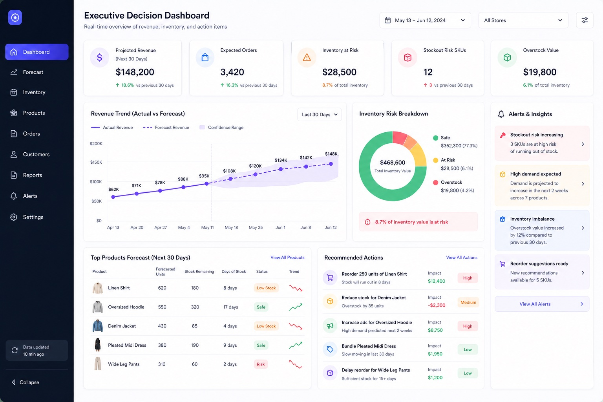
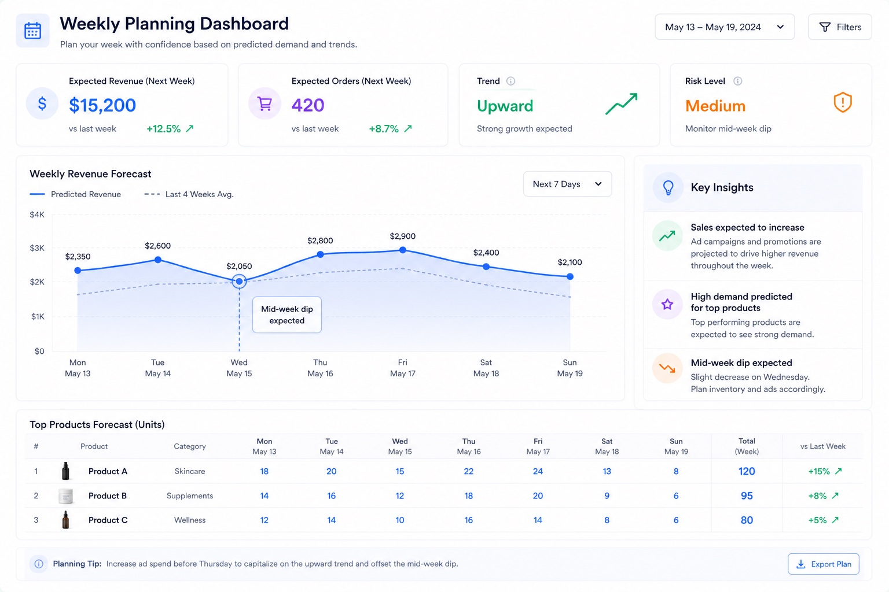
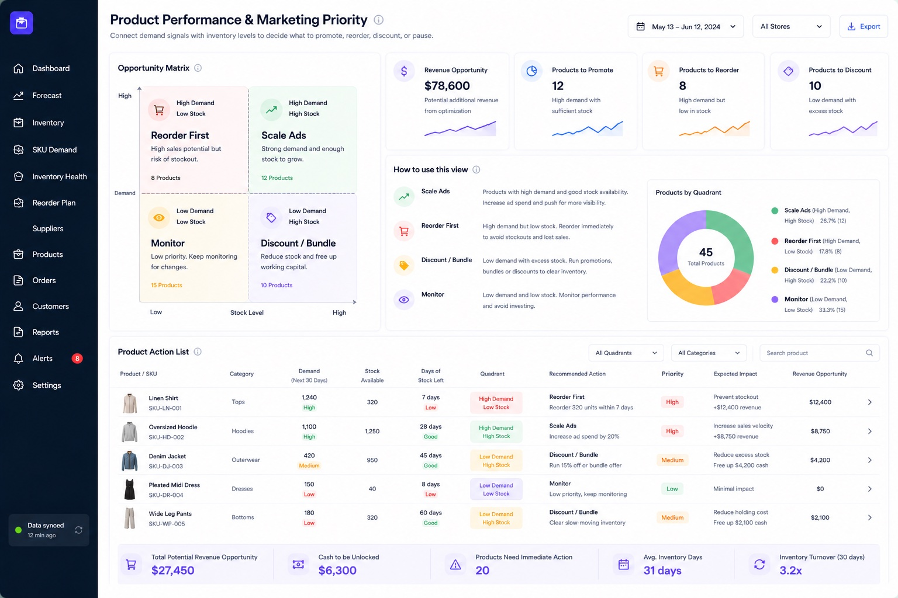

Forecast sales, plan reorders, and get clearer visibility into inventory decisions before they become problems.
Or reply back to the email if easier.
Built for ecommerce brands with multiple products, active sales, and growing planning complexity.
Revenue can be growing while planning still feels unclear.
Fast-moving products can run low before the team reacts
Slow-moving inventory can keep cash tied up
Reorders are often made late or based on gut feel
Marketing spend can scale before inventory is ready
Teams can see past sales, but not always what needs attention next
Start with historical sales, product movement, and inventory data.
Identify expected sales trends, product demand, and upcoming stock pressure.
See which products are likely to run low, slow down, or need action.
Use weekly/monthly views to plan reorders, marketing pushes, and inventory priorities.
Example views from the forecasting and planning system.



The goal is to help ecommerce teams plan ahead with more confidence. Instead of only looking backward at what already happened, the system helps show what is likely to happen next and which product or inventory decisions need attention.
Clearer weekly and monthly planning
Better visibility into future sales
Better reorder timing
Less reactive inventory decisions
Better alignment between marketing and stock
More confidence around product-level decisions
If this feels relevant, book a quick walkthrough below or just reply back to the email and we can find a time.
Review Your Current Forecasting Setup